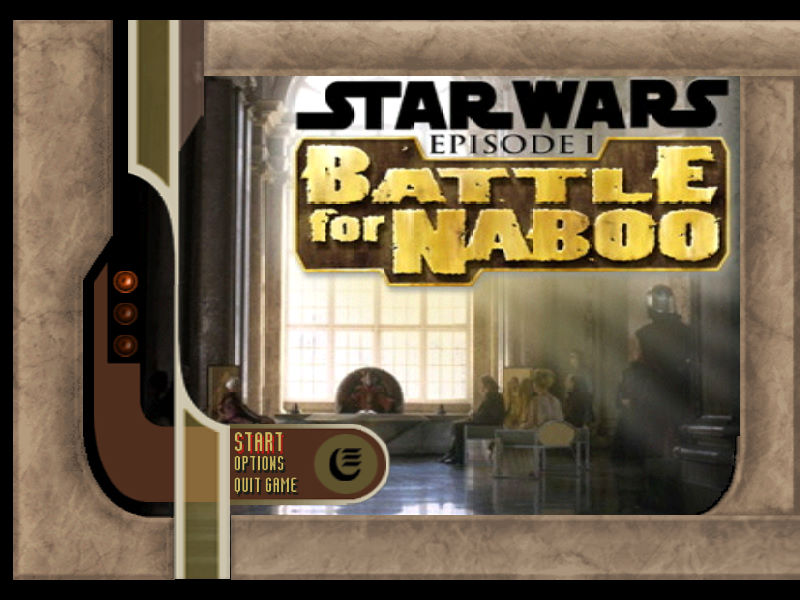
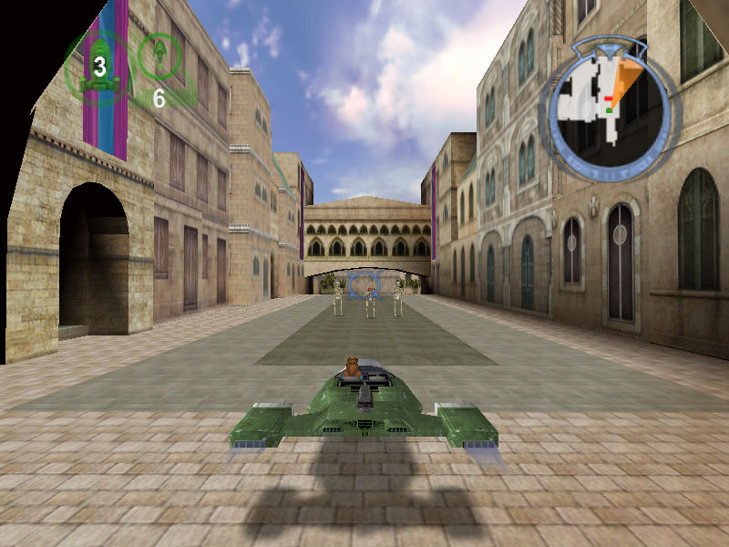

名稱：星際大戰首部曲／星際大戰前傳1：納布之戰 (Star Wars Episode I: Battle for Naboo，英文版) 簡介：Factor 5 2001年出品的街機風格動作射擊遊戲，由LucasArts代理發行 [待補]。

保護：光碟 備註：非安裝移機者，需設定下列Registry（假設安裝目錄在C:\BFN，光碟在D）： [HKEY_LOCAL_MACHINE\SOFTWARE\LucasArts Entertainment Company LLC\Battle for Naboo\Retail] [HKEY_LOCAL_MACHINE\SOFTWARE\WOW6432Node\LucasArts Entertainment Company LLC\Battle for Naboo\Retail] "Analyze Path"="D:\\Install\\SysCheck.exe" "CD Path"="D:" "Executable"="C:\\BFN\\data_pc\\BFN.exe" "Install Path"="C:\\BFN" "Launcher"="C:\\BFN\\BattleForNaboo.exe" "Source Dir"="D:\\" "Source Path"="D:" "InstallType"=dword:00000001 "Installed"=dword:00000002 "Registration"=dword:00000002 備註：VirtualBox無法執行，虛擬機請使用VMware。